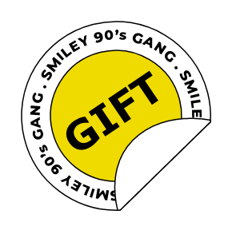

你曾經幻想過拋開一切顧慮展現最真實的自己，或是扮演完全不同的自己，甚至是包含不同的聲音、性別嗎？
轉換身分的時間裡是否讓你擁有無拘無束的感受。這次的特別企劃，將透過面臨各種情境的選擇發掘你的潛在性格，你希望展現出什麼樣的自己，來看看自己適合什麼樣的虛擬形象吧！

對於展現於他人眼中的自己感到不滿嗎？ 想要呈現更加理想的自己，想要大家認可真實的自己時，卻總是苦於現實狀況無法改變？！一張虛擬面貌將為你帶來新的人生。
參加【測驗你的豆靈屬性】心理測驗 並將結果分享至twitter/IG/FB 即有機會獲得7-11兩百元禮券！ 此外，還可再參加市值2000-8000台幣的 NFT抽獎活動！